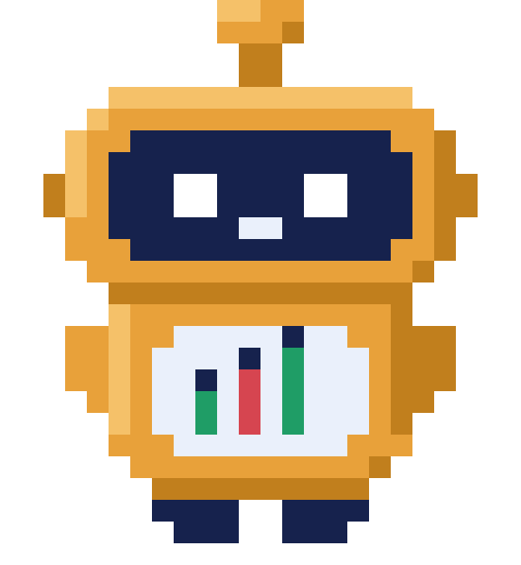

2026 雲湧智生黑客松 ｜ MaiCoin 智慧理財命題 ｜ 隊伍「第五名」
2017 年我剛進幣圈的時候，
最深的感覺不是興奮，是害怕。
資訊很封閉，甚至充斥著高風險的場外交易。
看著螢幕上那些跳動的紅紅綠綠，我感受到的是一種強烈的
冰冷感，還有 孤獨感。
我相信這也是現在每一個想踏進 Web3 的新手，共同的恐懼。
MaiMate 麥麥 — 從冰冷的數字，到溫暖的陪伴
① 所以我們做了麥麥
它不只是交易工具，是一個看得懂你的夥伴
而「看得懂你」不是形容詞——我們把一個真實帳戶一整年 10,000 筆交易全部算過一遍。
+NT$117,482
他以為自己一直在虧錢。其實這一年是賺的，勝率 66.6%（981 勝／493 負）
NT$963
真正虧最多的那一筆，只虧了九百六十三塊
NT$26,598,877
但賣掉之後又漲上去的機會成本，一年兩千六百五十九萬——這才是真正的傷口
他不是不會投資。他是看不見自己。

數字全部由程式從真實交易紀錄計算，不是舉例；麥麥還會依你的投資屬性換成陪伴／簡潔／分析三種說話方式
② 大家最怕的那件事
「AI 會不會亂花我的錢？」
✅ 麥麥能做的
- 查你的交易歷史，找出行為盲點
- 查 MAX 的即時行情
- 算出三種方案，數字全由程式計算
- 生成一張交易確認卡，等你決定
❌ 麥麥做不到的
- 直接下單 —— 下單函式根本不在它的工具清單裡
- 繞過確認卡 —— 送單的是另一支程式，只認你按下的憑證
- 修改決策軌跡 —— 稽核紀錄只能新增，不能改
- 提領你的資金 —— 資產留在 MAX，權限鎖死
AI 只有「草擬權」。扣板機的絕對控制權，永遠在你手上。
而且每一張確認卡只有 60 秒時效——過期作廢，不可重放。
③ 這份安全感，是真的能落地的
準上線級系統，而且交易所今天就會想要它
🏗 物理級別的解耦
Serverless 雲端原生架構。AI 決策的 /chat 與真正執行交易的 /order
拆成兩支獨立的 Lambda——AI 只能把憑證寫進資料庫，碰不到私有 API。
純 Vanilla JS 的 PWA，零框架、載入極快，已經可以直接嵌進 MAX／MaiCoin App，
主交易系統零改動。每次推送 CI 自動跑全套測試。
💰 它是手續費放大器
新手「看不懂→不敢交易」，麥麥陪跑出第一筆單；恐慌全賣離場的用戶 LTV 歸零，
攔住一個就是保住未來的手續費年金；三方案裡的「暫停」導向定期定額，
把一次性手續費變成年金。
重度用戶 AI 成本 <NT$60/月——用戶月交易額只要 NT$4 萬，手續費就回本。
✅ 不是 POC，是線上服務
7/31 真實成交：本人帳戶、最小額度，交易所單號 #20720919534、#20721028463，
MAX App 推播為證。
砍掉整套環境從零重建，實測 46 分鐘。
開發全程用 Kiro：steering×3、spec×6、MCP 設定都在 repo 裡。
接下來的四分鐘，我直接演給各位看
④ 接下來，我直接演給各位看
「ETH 跌太多了，幫我全部賣掉！」
五張皆為 8/1 線上站實機截圖（非 mockup、非離線劇本）；上台時這一頁是實機演示，掛掉才用它

技術的進步，是為了讓人感受到科技的溫度。
幣圈的牛熊冷暖交替，
但 麥麥永遠在這裡陪著你。
我們希望麥麥能成為每一個人探索 Web3 世界的嚮導。
AI 有手，方向盤在你手上。
謝謝大家 ｜ https://d1z0776b4u2tmf.cloudfront.net
企業級的技術落地
五支 Lambda，一個工具迴圈，一條被架構切斷的下單路徑
前端 SPAS3＋CloudFront
Vanilla JS・PWA
→
API Gateway/health /market
/chat /order /audit
→
Bedrock Converse
工具迴圈Haiku 對話調度
Sonnet 深度歸因
→
MAX Public APIticker／kline／depth
Knowledge BaseS3 Vectors・13 篇語料
行為引擎10,000 筆預計算
🚫 execute_order 永遠不在 LLM 的工具清單裡
真正送單的函式存在，但不在模型看得到的 TOOLS、也不在分派表——模型推論時看不到它的定義，
就算幻覺出這個名字也沒有東西會被執行。唯一送單路徑在另一支 Lambda，觸發條件是使用者按下確認＋60 秒憑證。
金融數字由程式算
價差 spread_pct、時間戳台北／UTC 都由後端算好給模型，LLM 不得自行計算。
每一條主張都附檔案:行號，見 docs/ARCHITECTURE.md ／ docs/COMPLIANCE.md
安全與法遵
合規不是免責聲明，是系統設計
金融 AI 最常見的做法是寫一段免責聲明，然後照做原本想做的事。
我們相反：先問「這件事能不能在架構上做不到」——做得到就從系統裡拿掉。
| 紅線 | 怎麼做到的（不是提示詞，是能力缺失） |
|---|
| 不代操 | LLM 的工具清單裡沒有 execute_order；真正送單在另一支 Lambda，只認使用者按下的 60 秒憑證 |
| 不報明牌 | 系統提示詞規則＋正則攔截＋三方案一律對等呈現、不得標推薦（實測連跑 6 次全乾淨） |
| 不碰保管提領 | 資產留在 MAX；API Key 只開「讀取＋交易」，不開提領 |
| 可問責 | 每次工具呼叫、草稿、確認、成交都寫進 append-only 稽核軌跡，使用者端可見 |
| 穩健 | 任一 API 掛掉自動降級離線 mock 並明示標示；斷網不假造行情 |
金管會「金融業運用 AI 指引」六原則逐條有對應。本節為工程自查非法律意見；
做不到的七項我們寫在 COMPLIANCE.md §5，包含 Guardrails 目前刻意停用的理由。
商業模式
這不是幫客戶省錢的工具——它是手續費放大器
交易所的收入核心是成交手續費（MAX 現貨基礎：掛單 0.08%／吃單 0.16%，2026-07 查證）。每個功能都直接推動這台收費機器。
| 收入線 | 機制 | 量化（估算，標注假設） |
|---|
① 手續費放大
今天就在收 |
新手「看不懂→不敢交易」→ 陪跑出第一筆單；
恐慌全賣離場的用戶 LTV 歸零 → 攔住＝保住未來手續費年金 |
中階散戶月交易額 50 萬 → 平台月收 NT$250–750/人；
年 4,674 筆的活躍戶流失一個，一年少收上萬到數十萬 |
| ② 冷靜期 → 定期定額 |
「暫停」不是不賺——導向 MaiCoin 既有 DCA 產品 |
衝動交易手續費是一次性；DCA 是年金 |
③ Premium 訂閱
第二曲線 |
損益歸因、年度健檢、即時行為提醒 |
月費 99–199；假設 10 萬活躍用戶滲透 5% ＝ 月收 50–100 萬 |
④ B2B 白牌
第三曲線 |
行為引擎＋合規 Agent 框架授權其他交易所／銀行財管 |
授權費＋分潤；台灣 VASP 專法後合規需求放大 |
單位經濟學：重度用戶 AI 成本 <NT$60/月 —— 用戶月交易額只要 NT$4 萬，手續費就回本。
成本與可行性
省錢是設計出來的，不是省出來的
| 工作 | 模型 | 成本 |
|---|
| 日常對話＋工具調度 | Claude Haiku（Bedrock） | ≈NT$0.3/次 |
| 深度歸因＋方案解釋 | Claude Sonnet（Bedrock） | ≈NT$2.2/次 |
| 混合平均＋prompt caching | — | <NT$0.6/次 |
省錢三決策
① S3 Vectors 取代 OpenSearch，避開月費上萬的陷阱
② 全 serverless，零閒置費用
③ 模型分層＋prompt caching，成本打到一折
全隊賽前總花費 <NT$500；千人規模基礎設施 <NT$3,000/月。
單價以 AWS 主控台現價估算，非實測。
價值錨點
此帳戶平均每筆賣出的機會成本
NT$11,480
一年攔住一筆衝動交易
＝ 16 年的 AI 成本
留存率每提高 1%，手續費增量遠大於整個 AI 帳單。
完成度｜Lv2 Private API｜Kiro
不是 demo 影片，是線上服務
🚀 已上線並驗收
後端驗收 21/22 通過
前端完整性 13/13
Python 單元 50 項
砍掉整套 stack 從零重建 實測 46 分鐘
手機實機：PWA 可加到主畫面、斷網可開
每次推送 CI 自動跑全套測試
← 為了因應官方環境當天才公布，一切設定走環境變數、零硬編碼
💳 Lv2 Private API 真實成交
7/31 真實帳戶、本人資金、最小額度
單號 #20720919534
單號 #20721028463
MAX App 推播確認、ETH 餘額 +0.0102
打通過程修掉 六個各自足以讓下單失敗的問題（簽章、volume key、憑證入庫、
低於交易所下限、四捨五入、確認鈕連按）
🛠 Kiro 全程參與
.kiro/steering × 3（全隊＋所有 AI 工具共用的開發紀律）
.kiro/specs × 6（chat-agent／profile／scenarios 含三件套）
MCP 設定、Autopilot 只在跑定義好的 task 時開
steering 是唯一真相來源——用其他 AI 開發時也把它餵進去
 1 · 它先去查查行情 → 查餘額 → 方案試算，每一次工具呼叫都亮一個 chip
1 · 它先去查查行情 → 查餘額 → 方案試算，每一次工具呼叫都亮一個 chip 2 · 沒下單，先反問攤開你自己的機會成本 NT$26,598,877，再問你一句
2 · 沒下單，先反問攤開你自己的機會成本 NT$26,598,877，再問你一句 3 · 三個算好的選項金額／手續費／賣後集中度全由程式算，三方案對等呈現
3 · 三個算好的選項金額／手續費／賣後集中度全由程式算，三方案對等呈現 4 · 最後一步由你60 秒憑證、滑價提醒。「麥麥不會替你按下這顆按鈕」
4 · 最後一步由你60 秒憑證、滑價提醒。「麥麥不會替你按下這顆按鈕」